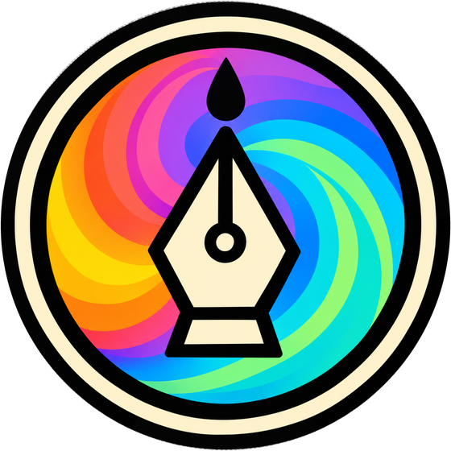
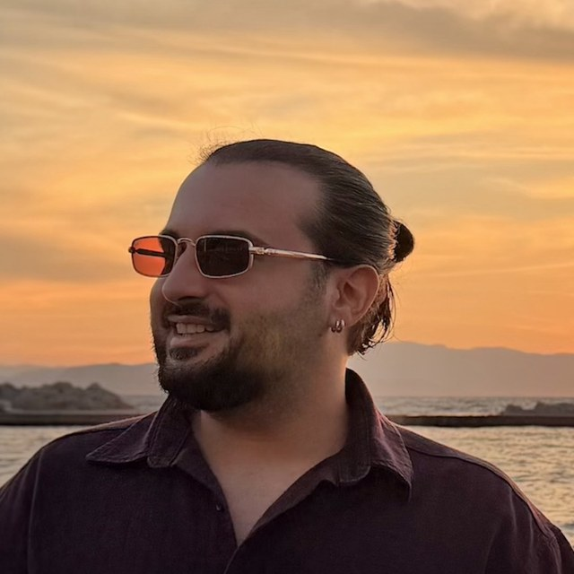
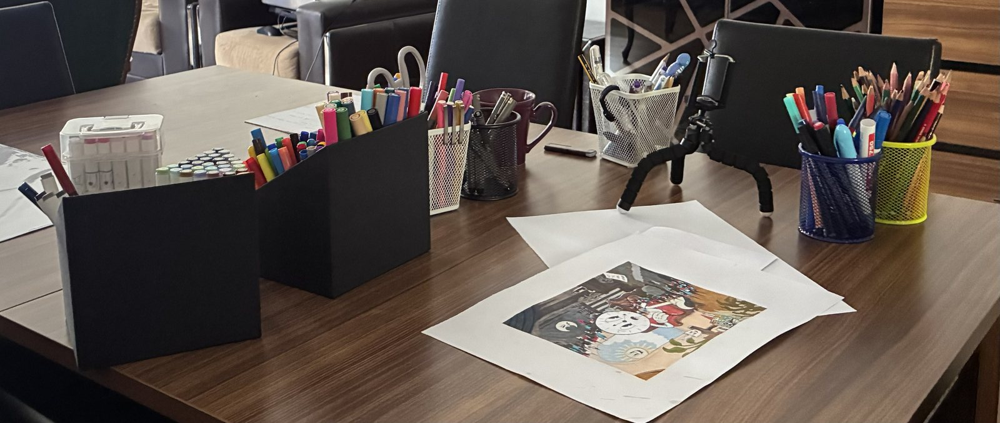

sadeceartOriginal hand-drawn illustrations inspired by music, literature, popular culture and everyday life, brought together here.
See my illustrations
I'm an illustrator based in İzmir, working on paper with acrylic markers and fineliners. Every piece is drawn by hand, and the images here are photographs of the originals.
My illustrations draw on music, literature, popular culture and everyday life, often with a streak of dark humor.

Some of them are. If you're interested in an original, write to me through the contact form and I'll let you know which pieces are available and the price.
Currently I ship original drawings within Turkey only.
Selected works are available as digital prints in my Etsy shop, Art Store. They are instant downloads that you can print yourself, for personal use only. No physical item is shipped.
In limited numbers, yes. Send a short message describing your idea and I'll let you know whether I can take it on.
You can share them with credit. For commercial use, please write to me first.
Use the contact form, or send a message on Instagram @sadeceart_.
Or on Instagram: @sadeceart_